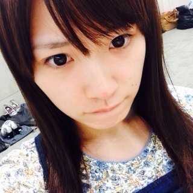
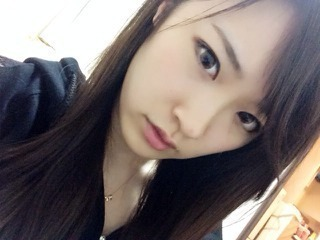
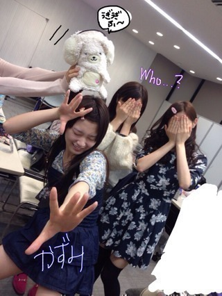

2013/1127Wed（´-`）.｡oO(か ずみん×241
バケラッタ\(^3^)/
皆さん、いつも応援ありがとう。
.
.
.
今日は7枚目シングル バレッタの
発売日♡♡
皆さんゲットして
下さいましたか(*ﾟﾛﾟ)！！？
.
.
他のメンバーの個人PV見て
浮気とかしてたら怒るよ！笑
.
私の親友の女の子(数名)は
私の個人PVには目もくれず
まりかのに毎回ハマっているの！！
前会ったらね、
まりっかまりっかまりっか〜♪
ってみんなで歌われて
びっくりしたよ(￣▽￣)
.
.
.
.
そして今日はソニレコ配信日！
そして昭和にアメイジングの発売日！
そしてそして
音楽の祭典 ベストアーティスト2013
にも出演します♪
よかったらチェックしてみてね♡
.
.
.
.
今は待ち時間なんだよ〜☆
すっぴんでブログ書いています！

鼻のニキビ跡がずっと治らなくて
赤鼻のトナカイ状態です...(´;ω;`)
メイクで治しちゃうよ！(￣▽￣)うぎ
.
ムーンプリズムパワー メイクアップ！
.
今日は何の髪型にしようかなぁ...
.
.
昨日はビイストレディース風で
髪を分けて撮ったの！！！

.
本当髪型は悩みますね(ﾉ;ω;)ﾉ
.
.
.
ベストアーティストに
何の髪型で出るかは後でのお楽しみ♪
.
.
.
.
それでは頑張ってきます(*´ｰ`*人)

↑最後にクイズじゃ！
今撮った写真！
後ろの2人プラス人形もってるのは
誰だ＼(^o^)／？？？
.
.
ではではっ♡
2013/11/27 17:06


コメント(487)
かずみーーーん！！！
こんばんは
今日もおつかれさまです‹‹\(´ω` )/››‹‹\( ´)/››‹‹\( ´ω`)/››
2回目！
さっきバレッタ買いました！
帰って聴きます！見ます！
では
あでゅー
ゆーーち。
わたしもセーラームーンめっちゃ好きなんです♡
アニメの方が好き♡
今、ネット販売のみだけどセーラー戦士5人の返信するときの棒？のイヤホンジャック売ってるんだよ〜！
くっそかわいいの！
それを教えてあげたくてコメントしました〜٩( ᐛ )و
かずみん、伏姫も可愛かったけどすっぴんも可愛いーねー ∩^ω^∩
後ろの二人だれだろ？まっちゅんと七瀬かなー？
かずみん、ポジピース★
友達さんもまりっかまりっかって歌うんだね（笑）
人形はさゆちゃん
ゆったんとちはる
ねぇねぇ、ジブリの、かぐや姫の物語、すっごいよかったよ！！！
後ろの二人はなーちゃん、ねねころ、人形はあしゅと予想！！
ドSにアメイジングはやです。笑
バレッタ今から買って来ます
写真は、一人は、なーちゃん？
後はわかんないやー（≧∇≦）
バレッタ、昨日買ったよ(*^^*)
あ、まいやんちゃんのPVみてた 笑
人狼ゲームお疲れ様
ベストアーティスト
これから
現地で見ます
でわ
ポジティブかずみん
これでファイナルアンサー！
バレッタ買ったよ(*´∨`*)ﾉ
握手会楽しみ( ´-` ).｡oO ( ♡ )
ベストアーティスト、リアルタイムで見れないのが残念ですががんばってきてくださいね！
クイズは左優里さん、右七瀬ちゃん、人形持ってるの小百合ちゃん、でしょうか？
一実さんのヘア楽しみにしてます！
今日はこれから！がんばってきてくださいね♪
ソニレコみたよ！可愛かったなぁ面白かったなぁ
次楽しみにしてるよ！
個人PVも一番最初にみた！
松茸うまそーだった！
かずみん可愛かったの二言！
ベストアーティストがんばってねo(^▽^)o♡
アメイジング*\(^o^)/**\(^o^)/**\(^o^)/*
バケラッタ！ポジピース！
バレッタゲットしたよ！
個人PV観たよ内容忘れたけど(笑)
クイズはぬいぐるみの手はさゆにゃん？
手で顔隠してるのは左がゆったんで右が七瀬？
ガンバレー(^o^)
それじゃまぁたぁなぁ！
かずみん可愛い♡
また個人PVはゆっくり見るね(^_^)
バケラッタ！(´º﹃º｀)
久しぶりに会いたいわ～
全握はよ！
◎◎◎◎◎◎◎◎◎◎◎◎
じゅんこです！
かずみんの個人PVみたよ！
松茸美味しいよね！！
かずみん可愛かったよ！
ソニレコ後から見るね！
ベストアーティスト絶対見るよ！
楽しみー(≧∇≦)b
ウチもニキビなかなか治らない…(>_<)
早く治ってほしい…
これからも無理せずかずみんらしく頑張ってね！
かずみん大好き♡
これでファイナルアンサー！
バケラッタ！ポジピース！
バレッタゲットしたよ！
個人PV観たよ内容忘れたけど(笑)
クイズはぬいぐるみの手はさゆにゃん？
手で顔隠してるのは左がゆったんで右が七瀬？
ガンバレー(^o^)
それじゃまぁたぁなぁ！
バレッタ発売日だけどまだ買えてません(T_T)
また買ったらご報告します！
クイズの問
左から、さゆにゃん、ねねころ、玲香さん！！
全く自信なし。笑
今日はこの辺で(o^^o)
バイト行ってきます*\(^o^)/*
ビイストレディース風の髪型に一票(>_<)
あとは誰かな？
左ねねちゃん
右七瀬ちゃん
難しい(^^ゞ
バレッタgetしたよ～＼(^o^)／
ビイストレディース風もクールビューティー☆
似合ってるよ(^-^)v
あとでまたコメします
かずみんこんにちわ♡
今日のベストアーティスト行きます♡
楽しみにしてるのでがんばってね♡
寒いから風邪引かないように
してください♡♡
バレッタ♪
バケラッタ=^・^=
他メンバーのＰＶ見て浮気？
みんな可愛いけど、かずみんしか＼(^O^)／
今日の髪型はポニーかな？
テレビ見て確認するね!!
今日のクイズは
あしゅりんとまいやん！
ぬいぐるみは、さゆりんごとみた(^^)d
かずみんすっぴんも可愛い♪
では歌頑張ってね!!
またね(*・ｘ・)ノ~~~♪
かずみん バケラッタ ＼(^o^)／
「バレッタ」届く予定日明日だったのに、さっき届いたよ (^O^)／
クロネコヤマトの宅配の方、雨の中急ぎ届けていただきありがとうございます ヾ(*´Д`*)ﾉ
A,B,C,通常盤ぜんぶばっちり買ったけど、いまからバイトだし今週は学校もちょっと忙しいから見るのは週末になっちゃうかも (｡-_-｡)
もちろん かずみん の個人PVも見るけど、毎回全員分見てるからそこは許してー (つД`)ノ笑
まりっか の個人PVは毎回完成度高いし、くせになってはまっちゃう気持ちもわかるなー (*^^*)
もちろん かずみん のこれまでの作品もすごく好きだよ！
音楽の祭典もリアルタイムでは無理だけど、ばっちし予約してるから帰ってから見るね ♫
どんな髪型ででてくるのか楽しみ（≧∇≦）
最後のは…
ワンピースが ちはるん！
白いのが ゆったん！
人形持ってるのが まいまい！
全然自信はないけどね (･･;)
正解発表待ってるね ( ´ ▽ ` )ﾉ
でも、かずみんアイドルなのにニキビあるとか晒してなんか親近感わいた〜♪(笑)
お互い頑張って治そうね！！
え〜誰だろう？
七瀬？
ぬいぐるみ持ってるのはさゆにゃん？
バケラッタ!!かずみん久しぶり♪
(●´∀｀●)/
後ろの…誰？ろってぃーいる？
ダメだわっかんない笑っ
(。≧∇≦。)
バケラッタ楽しみにしてるね♪
TVは録画で観るね～♪
かずみんはいつも明るいね♪
(*´∀｀*)
かずみんがいるとその場がパアッと明るくなる♪
かずみんの特性だね♪
ﾟ+｡(*′∇｀)｡+ﾟ
ステージの上でかずみんがどんな髪型か♪
楽しみ!!
(≧∀≦)y-~~~
最後に一言!!
かずみん可愛いすぎるもー♪
タンポポでした♪
またね♪
♪
バレッタね、まだ届いてない笑
明日届くらしいから聞くね(￣▽￣)
個人PVねー、まりっかのやつあれインパクトあるからな笑
乃木坂46全然興味なかった友達に見したらそれだけでハマるっていうw
でもね、自分はやっぱり一実さんのどんまーいってやつが好きだな笑
タイヤ取られちゃったのは笑ったw
今回のも楽しみにしてます
ベストアーティスト！！
バイトで見れないから妹に撮ってくれってお願いするわ！！
ではまた^ ^
ベストアーティストみるよー^ ^
ベストアーティストリアタイは塾で見れないけど録画して見るよ〜!!
すっぴんもかわいいよ～、ベストアーティスト2013も頑張ってくださいヾ(＠⌒ー⌒＠)ノ
コメントする